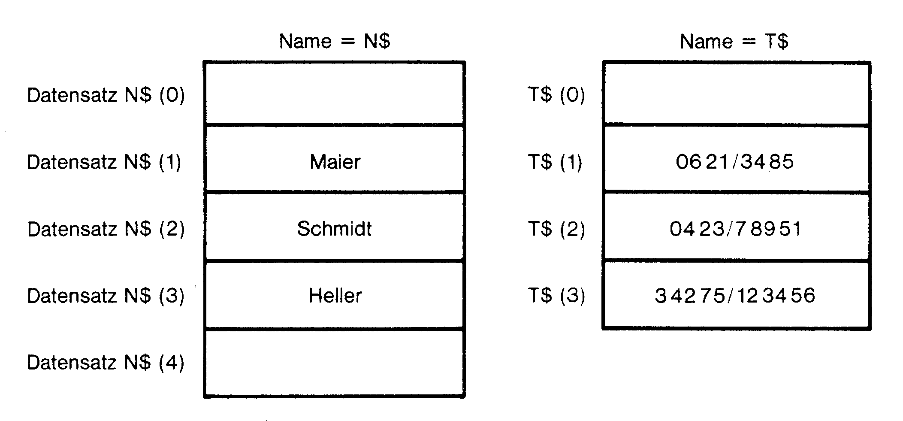
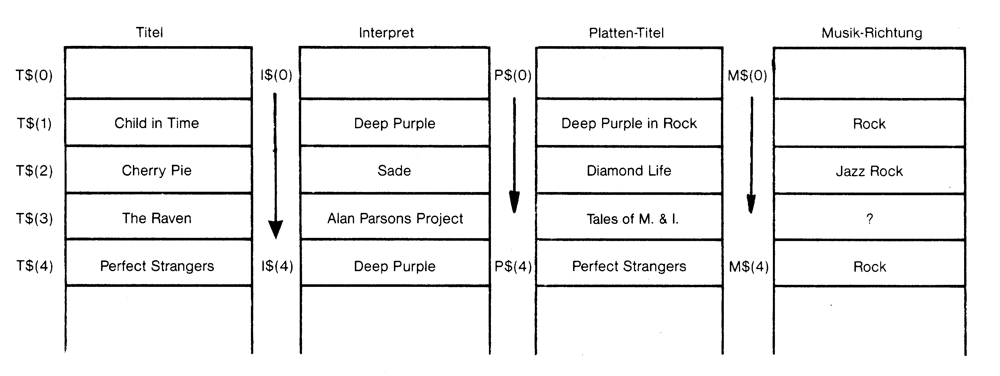
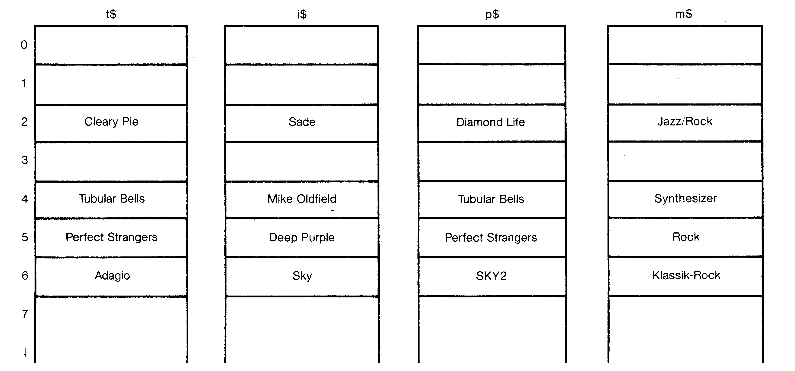
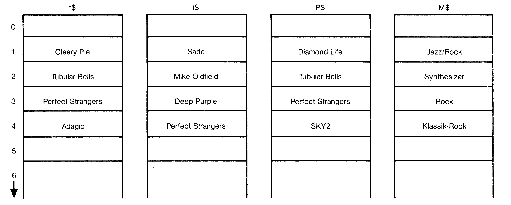
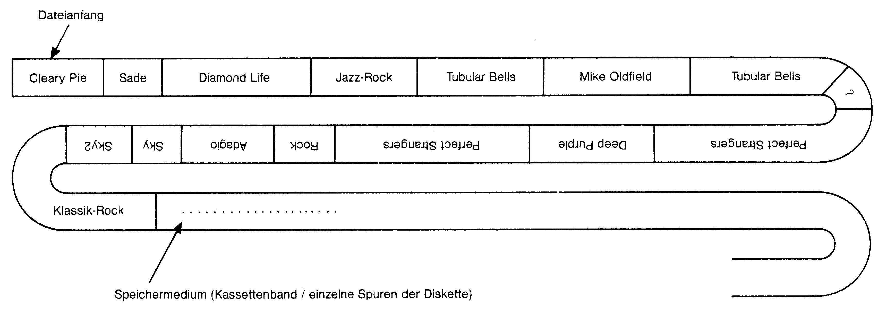
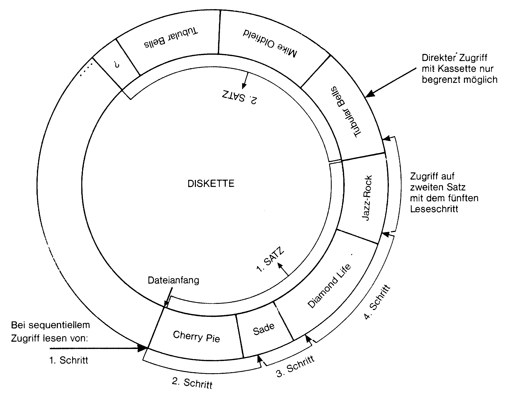

Dateiverwaltung für Einsteiger
Eine der sinnvollsten Einsatzmöglichkeiten eines Computers besteht darin, ihn Daten verwalten zu lassen. In einem ausführlichen Kurs möchten wir Ihnen erklären, wie man problemlos Dateiverwaltungen schreibt, und auf welche Dinge Sie bei der Programmierung achten müssen.
Wenn Sie auf Ihrem C 64 nicht nur Fertigprodukte einsetzen, sondern auch selbst programmieren wollen, müssen Sie sich zwangsläufig auch mit der Verwaltung von Daten im Hauptspeicher und vor allem auf einem externen Massenspeicher (Floppy oder Datasette) auseinandersetzen.
In diesem Artikel werden wir Ihnen zeigen, welche Probleme hierbei immer wieder auftreten und wie sie gelöst werden können. Fortgeschrittene C 64-Anwender weise ich darauf hin, daß bei der Speicherung von Daten nur sequentielle Dateien erläutert werden, da diese für Einsteiger bereits problematisch genug sind. Sogenannte »relative« oder »Direktzugriffsdateien« werden nicht berücksichtigt.
Im Handbuch des C 64 wird beschrieben, wie Daten beliebiger Art auf Diskette und Kassette mit Hilfe sogenannter »sequentieller« Dateien verwaltet werden können. Die ersten Versuche mit sequentiellen Dateien führen jedoch meist sehr schnell zur Verzweiflung, da die im Handbuch abgedruckten Beispielprogramme zwar einwandfrei laufen, nach der Abänderung der Programme (Sie wollen schließlich Ihre eigenen Daten verwalten!) meist jedoch nicht mehr funktionieren.
Es gibt C 64-Besitzer, die sich aus lauter Verzweiflung völlig von der Dateiverwaltung abgewendet haben. Ein Leser programmierte sogar eine Adressenverwaltung, indem er ein Programm schrieb, in dem die Adressen in Form von REM-Zeilen enthalten waren:
10 rem gerd maier, ottoweg 5, 6700 ludwigshafen, 0621/36276
20 rem willi schneider, lange-roetter-str.3, 6800 mannheim, 0621/239672Die Programmzeilen waren alphabetisch nach den Namen geordnet, so daß er bei der Suche nach einer bestimmten Telefonnummer in etwa wußte, welche Programmzeilen er zu LISTen hatte. Es ist zweifellos möglich, auf diese Weise, bei der die Daten unmittelbar im Programm enthalten sind, Daten zu verwalten. Die Daten können aktualisiert werden, indem Programmzeilen eingefügt, gelöscht oder geändert werden.
Der Einsatz eines Computers ist bei dieser Form der Datenverwaltung jedoch vollkommen überflüssig. Das gleiche Ergebnis kann mit Hilfe eines Notizblocks oder eines Karteikastens weitaus einfacher und komfortabler erreicht werden. Die eigentlichen Vorteile der »computerisierten« Dateiverwaltung, das komfortable Eintragen, Löschen, Ändern und vor allem Suchen von Daten kann nicht verwirklicht werden, wenn das Programm und die zu verwaltenden Daten eine Einheit bilden.
Üblicherweise trennt man daher die eigentlichen Daten vom Programm zur Datenverwaltung. Im Programm selbst sind die Daten nicht enthalten, es dient nur zur Steuerung der Arbeit mit der Datei. Die Daten werden getrennt in einer Datei gespeichert, entweder auf Diskette oder auf Kassette. Die Arbeit mit einer solchen Datei verläuft dann wie folgt:
- Laden und Starten des Dateiverwaltungsprogramms
- Einlesen der Datei durch das Steuerungsprogramm
- Arbeit mit der Datei (Suchen, Ändern etc.)
- Speichern der Datei, da die Daten während der Arbeit eventuell geändert wurden
Organisation der Daten im Computerspeicher
Wenn die eigentlichen Daten nicht unmittelbar in den Programmzeilen enthalten sind, müssen sie in Form von Variablen im Speicher des C 64 abgelegt werden. Das heißt, beim Eintragen einer Adresse werden diese Daten vom Steuerungsprogramm einer Variablen zugewiesen und beim Speichern der Datei wird der Inhalt dieser Variablen gespeichert, um bei der nächsten Programmbenutzung wieder eingelesen zu werden.
Theoretisch ist es nun vollkommen Ihnen überlassen, welche Variablen Sie verwenden, um Daten zu speichern. Eine Möglichkeit wäre zum Beispiel die Verwendung von unterschiedlichen Variablennamen für verschiedene Adressen:
10 rem eingabe der adressen
20 input "erste adresse (name)";a1$
30 input "erste adresse (telefonnr.)";a2$
40 input "zweite adresse (name)";b1$
50 input "zweite adresse (telefonnr.)";b2$
60 input "dritte adresse (name)";c1$
70 input "dritte adresse (telefonnr.)";c2$Wenn Sie dieses Programm eingeben und starten, werden Sie nacheinander nach der ersten, zweiten und der dritten Adresse gefragt, und zwar jeweils nach Name und Telefonnummer. Nach der Eingabe befinden sich die Adressen in den Variablen »a1$«, »a2$« bis »c1$«, »c2$«, sie wurden diesen Variablen zugewiesen. Diese Art der Datenspeicherung ist leider außerordentlich unflexibel. Angenommen, Sie suchen die Telefonnummer von Herrn Maier und zur Suche wird der folgende Programmteil verwendet:
110 rem suche nach telefonnr.
120 input "name";n$
130 if n$=a1$ then print a2$
140 if n$=b1$ then print b2$
150 if n$=c1$ then print c2$Diese »Suchroutine« wird die gestellte Aufgabe erfüllen und die gewünschte Telefonnummer ausgeben. Auf diese Weise zum Beispiel 100 Adressen zu verwalten, bedeutet jedoch, ein Programm zu schreiben, in dem sowohl in der Eingabe- als auch in der Suchroutine hundertmal der prinzipiell gleiche Befehl vorkommt. Der einzige Unterschied betrifft den jeweiligen Variablennamen. Ein solches Programm zu schreiben, ist sicherlich außerordentlich ineffizient, abgesehen davon, daß Ihnen nach kurzer Zeit die Variablennamen ausgehen dürften.
Die in praktisch jeder Dateiverwaltung verwendete Lösung besteht in der Verwendung indizierter Variablen oder auch sogenannter »Arrays« oder »Felder«. Im folgenden werden wir immer Stringarrays verwenden, da in Stringvariablen Daten beliebiger Art gespeichert werden können, im Gegensatz zu numerischen Variablen.
Auf die Variablen kommt es an
Wie Sie im C 64-Handbuch nachlesen können, besitzen Arrayvariablen gleiche Variablennamen und werden durch den Index unterschieden. »a$(1)« ist demnach eine andere Variable als »a$(2)« und von dieser völlig unabhängig. Komfortabel wird die Verwendung von Arrays erst durch die Möglichkeit, als Index selbst eine Variable angeben zu können, zum Beispiel »a$(i)«. Welche Variable tatsächlich angesprochen wird, hängt vom Wert der Variablen »i« ab. Hat »i« den Wert drei, entspricht der Ausdruck »a$(i)« dem Ausdruck »a$(3)«.
Beachten Sie bitte die bei der Verwendung von indizierten Variablen notwendige Dimensionierung mit dem DIM-Befehl, das heißt die Angabe der Arraygröße. Im folgenden werde ich immer von einer Datei ausgehen, in der maximal 500 Adressen gespeichert werden. Entsprechend wird die Dimensionierung vorgenommen. Die Eingabe- und die Suchroutine können nun auf die Verwendung eines Stringarrays umgestellt werden:
1 rem dimensionierung
2 dim n$(500),t$(500)
10 rem eingaberoutine v.1
20 for i=1 to 3
30 input "adresse (name)";n$(i)
40 input "adresse (telefonnr.)";t$(i)
50 nextDie Programmschleife (Zeile 30 bis 50) wird dreimal abgearbeitet. Beim ersten Schleifendurchgang besitzt »i« den Wert eins. Da die Ausdrücke »n$(i)« und »t$(i)« daher den Ausdrücken »n$(1)« und »t$(1)« entsprechen, werden der vom Benutzer eingegebene Name und die Telefonnummer in den Array-Variablen mit dem Index eins gespeichert.
Beim nächsten Durchgang besitzt »i« den Wert zwei. Die nächste einzugebende Adresse wird daher in »n$(2)« und »t$(2)« gespeichert, und entsprechend die dritte einzugebende Adresse beim letzten Schleifendurchgang in »n$(3)« und »t$(3)«.
Durch Änderungen des Schleifenendwertes – zum Beispiel »for i=1 to 100« – können mit dem gleichen Programm beliebig viele Adressen vom Benutzer eingegeben werden. Diese Routine ist daher weitaus kürzer und flexibler als es bei der Verwendung verschiedener Variablennamen der Fall war. Die entsprechend geänderte Routine zur Suche einer bestimmten Telefonnummer:
110 rem suche nach telefonnr. v.1
120 input "name";n$
130 for i=1 to 3
140 if n$=n$(i) then print t$(i)
150 nextWie Sie sehen, ist der Ablauf dieser Routine mit der Eingaberoutine »verwandt«. Auch hier wird eine Schleife benutzt, um mit Hilfe des Schleifenindizes »i«, der bei jedem Durchgang um eins erhöht wird, das gesamte Stringarray »n$(1)« bis »n$(Schleifenende)« zu bearbeiten. Wird eine Übereinstimmung zwischen dem »Suchkriterium«, das heißt dem Namen »n$« und dem momentan bearbeiteten Namen »n$(i)« festgestellt, gibt das Programm die zur jeweiligen Adresse zugehörige Telefonnummer »t$(i)« auf dem Bildschirm aus.
Beachten Sie die »Parallelität« der beiden Stringarrays: Ein bestimmter Index entspricht einer Adresse, die in zwei verschiedenen Stringarrays gespeichert ist. Zu jeder Variablen des Arrays »n$(...)« gibt es eine Variable aus dem Array »t$(...)« mit dem gleichen Index, die die zugehörige Telefonnummer enthält (siehe Bild 1).

Komfortable Dateiverwaltungen in Basic sind nur mit Hilfe indizierter Variablen zu verwirklichen. Da auch in den folgenden Programmbeispielen ständig Array-Variablen verwendet werden, ist es unbedingt notwendig, daß Sie das Prinzip der Indizierung verstehen. Bei Verständnisschwierigkeiten bitte die entsprechenden Kapitel im C 64-Handbuch nachlesen.
In der Praxis werden Sie »Name« und »Telefonnummer« sicher nicht als vollständige Adresse empfinden. Das dargestellte Prinzip läßt sich jedoch problemlos auf Daten beliebiger Art übertragen. Nehmen wir als Beispiel eine Schallplattendatei, die die Informationen »Titel«, »Interpret«, »Platte« und »Musikrichtung« enthalten soll (siehe Bild 2). Wir benötigen zur Speicherung der Informationen vier Stringarrays:

| t$(...) | = Titel |
| i$(...) | = Interpret |
| p$(...) | = Platte |
| m$(...) | = Musikrichtung |
Die entsprechend geänderten Programmteile:
10 rem eingabe v.2
20 for i=1 to 5
30 input "titel";t$(i)
40 input "interpret";i$(i)
50 input "platte";p$(i)
60 input "musikrichtung";m$(i)
70 next
110 rem suche v.2
120 input "titel";t$
130 for i=1 to 5
140 if t$=t$(i) then print i$(i):print p$(i):print m$(i)
150 nextObwohl es sich in diesem Beispiel um eine völlig andere und detailliertere Datei handelt, ist das Prinzip der Dateneingabe und der Suche exakt das gleiche wie zuvor.
Eintragen von Datensätzen
Die vorgestellten Programmbeispiele sind zwar zur Darstellung des prinzipiellen Umgangs mit Daten sehr gut geeignet, für den Einbau in ein Dateiverwaltungsprogramm bedarf es jedoch noch größerer Änderungen. Eine Hauptforderung an eine Dateiverwaltung ist Flexibilität. In einem vernünftigen Programm dieser Art ist es zum Beispiel undenkbar, daß zwar ein Titel eingegeben und nach dem zugehörigen Interpreten gesucht werden kann, jedoch nicht umgekehrt nach den von einem bestimmten Interpreten geschriebenen Stücken. Die Suchmöglichkeiten sollten so umfangreich wie möglich sein. Jeder (!) Teil des gesamten Datensatzes sollte als Suchkriterium verwendet werden können, so daß zum Beispiel auch ein Plattentitel eingegeben werden kann und alle Stücke auf dieser Platte mit Titel, Interpret und Musikrichtung ausgegeben werden.
Bevor wir versuchen, die Suchroutine entsprechend diesen Ansprüchen umzuschreiben, will ich ein anderes Problem behandeln. Sowohl in der Eingabe- als auch in der Suchroutine werden feste Schleifenstart- und Endwerte benutzt (eins und fünf in Zeile 20 und 120). Wenn wir zum Beispiel 20 Schallplatten mit insgesamt 322 Liedern besitzen, werden wir die Dimensionierung (»dim t$(322),...«) und die Schleifenendwerte (»for i=1 to 322«) entsprechend ändern.
Bei der Eingabe der Datei wird anschließend von uns verlangt werden, alle 322 Datensätze einzugeben, eine kaum an einem Tag zu lösende Aufgabe. Und selbst wenn wir uns diese Mühe machen, ist es eine äußerst ungünstige Lösung, wenn der Zukauf einer weiteren Platte eine Änderung des Programms (FOR-NEXT-Schleife) erforderlich macht.
Die Eingaberoutine muß daher verallgemeinert werden. Nach dem Starten des Programms sollte es möglich sein, beliebig viele Datensätze in die Datei einzutragen. Um keine Daten zu überschreiben, müssen neue Daten an das Ende der jeweiligen String-Felder »angehängt« werden.
Wir benötigen daher eine Variable, die uns ständig Auskunft darüber gibt, wieviele Datensätze sich bereits in der Datei befinden und die wir »ad« (Anzahl der Datensätze) nennen werden. Diese Variable muß immer dann um den Wert eins erhöht werden, wenn ein neuer Datensatz eingetragen wird, und sie muß selbstverständlich zusammen mit der eigentlichen Datei auf Diskette beziehungsweise Kassette gespeichert werden, wenn wir die Arbeit mit dem Programm beenden.
Wenn das Programm geladen und gestartet wird, wird außer der eigentlichen Schallplattendatei auch diese Variable »ad« geladen, so daß unser Dateiverwaltungsprogramm immer »weiß«, wieviele Datensätze sich in der Datei befinden.
1 rem dimensionierung
2 dim t$(500),i$(500),p$(500),m$(500)
10 rem eingabe v.3
20 ad=ad+1:rem anzahl datensaetze
30 input "titel";t$(ad)
40 input "interpret";i$(ad)
50 input "platte";p$(ad)
60 input "musikrichtung";m$(ad)
70 input "weiterer Datensatz (j/n)";a$
80 if a$ = "j" then goto 20Die Schleife zur Eingabe der Datensätze entfällt. Bei jeder Benutzung der Eingaberoutine wird ein einzelner Datensatz eingetragen, und zwar »hinter« den bereits vorhandenen Datensätzen.
Bei der ersten Benutzung des Programms besitzt »ad« den Wert null und erhält wegen Zeile 20 den Wert eins. Der erste Datensatz wird daher den Variablen »t$(1)«, »i$(1)«, »p$(1)« und »m$(1)« zugewiesen. Eine weitere Eingabe bewirkt die Erhöhung von »ad« um eins, der zweite Datensatz wird daher in »t$(2)« bis »m$(2)« eingetragen. Jeder einzutragende Datensatz wird automatisch in der nächsten noch nicht belegten Array-Variablen eingetragen.
Wie Sie sehen, gestattet erst die Verwendung indizierter Variablen und die Verwendung einer weiteren Variablen als Index die Programmierung flexibler Dateiverwaltungen, in denen die Anzahl der Datensätze und weitere sogenannte »Dateiparameter« nicht von vornherein starr festgelegt sind.
Löschen von Datensätzen
Nach dem Eintragen von Datensätzen (hier: Titel mit allen weiteren Informationen) wenden wir uns nun dem Gegenteil zu, dem Löschen eines kompletten Satzes. Das Löschen eines Datensatzes kann mit dem Vernichten einer Karteikarte verglichen werden, nur daß anstelle der Karteikarte Variablen »vernichtet« beziehungsweise gelöscht werden.
Die einfachste Möglichkeit, zum Beispiel den dritten Datensatz zu löschen, besteht darin, alle zugehörigen Array-Variablen als leer zu definieren:
| t$(3) | ="":rem titel löschen |
| i$(3) | ="":rem interpret löschen |
| p$(3) | ="":rem plattentitel löschen |
| m$(3) | ="":rem musikrichtung löschen |
Wenn wir auf diese Weise vorgehen, besitzt unsere Datei nach vielen Löschvorgängen ein Aussehen gemäß Bild 3, es ähnelt einem Schweizer Käse und weist Unmengen von »Löchern« beziehungsweise Lücken auf. Da neue Datensätze prinzipiell am Ende der Datei eingetragen werden, bleiben diese Lücken unbenutzt. Daher wird irgendwann der Fall eintreten, daß unsere Datei voll ist, das heißt die letzten reservierten indizierten Strings mit dem Index 500 belegt sind, obwohl die Datei tatsächlich wesentlich weniger Datensätze enthält.

Beim Löschen von Datensätzen sollte aus diesem Grund die Entstehung von Lücken vermieden werden. Diese Bedingung kann am einfachsten erfüllt werden, wenn alle folgenden Datensätze aufgerückt werden (siehe Bild 4).

10 rem loeschen des n-ten satzes
20 for i=n to ad-1
30 t$(i)=t$(i+1)
40 i$(i)=i$(i+1)
50 p$(i)=p$(i+1)
60 m$(i)=m$(i+1)
70 next
80 ad=ad-1Diese Löschroutine ist allgemein genug aufgebaut, um in einer Dateiverwaltung Verwendung zu finden. Gelöscht wird kein starr festgelegter Datensatz, sondern der durch die Variable »n« bestimmte Satz.
Das Programm kann jederzeit durch den Abschluß mit einer RETURN-Anweisung als Unterprogramm formuliert werden. Wenn zum Beispiel der dritte Datensatz gelöscht werden soll, ruft das Hauptprogramm das Unterprogramm auf, nachdem es zuvor der Variablen »n« den Wert drei zugewiesen hat (»n=3:gosub (Datensatz löschen)«).
Ändern und Suchen von Datensätzen
Mit einer Dateiverwaltung, die die Funktionen »Eintragen von Datensätzen« und »Löschen von Datensätzen« besitzt, ist auch das Ändern eines Satzes möglich, indem dieser zuerst komplett gelöscht und anschließend – mit den entsprechenden Änderungen – neu eingetragen wird. Eine zusätzliche Routine ist nicht erforderlich, wenn die Unterprogramme »Löschen« und »Eintragen« geschickt verwendet werden.
Das Suchen von Datensätzen wurde an einem in der Praxis relativ unbrauchbaren Programmbeispiel erläutert. Eine vernünftige Suchroutine sollte es, wie bereits erwähnt, erlauben, einen beliebigen Suchbegriff, das heißt, einen beliebigen Datensatzteil einzugeben.
Eine solche Suchroutine muß daher derart gestaltet werden, daß sie jedes (!) Feld eines Datensatzes mit dem eingegebenen Suchbegriff vergleicht. Entspricht eines dieser Felder dem Suchbegriff, muß der komplette Datensatz angezeigt werden. Negativ an dieser Methode bleibt zu vermerken, daß sie relativ zeitaufwendig ist.
Beachten Sie, daß die Suche nach der Ausgabe des ersten gefundenen Datensatzes keinesfalls abgebrochen werden darf. Ein Beispiel: In einer Adreßdatei wurde als Suchbegriff vom Benutzer der Name »Maier« eingegeben. Die Datei wird nun vom Programm durchsucht und der Datensatz »Maier, Georg, Wilbertweg 5, 6000 München« ausgegeben. Möglicherweise befinden sich in der Datei jedoch mehrere »Maier« und der gefundene Datensatz ist trotz Übereinstimmung mit dem Suchkriterium nicht jener, dessen Adresse vom Benutzer gesucht wird.
Da dieser Fall in der Praxis häufig vorkommt, sollte das Programm den Benutzer nach der Ausgabe eines Datensatzes immer fragen, ob die Datei nach einem weiteren mit dem Suchkriterium übereinstimmenden Satz durchsucht werden soll, oder ob die Suche beendet ist.
Nachfolgend soll eine Suchroutine vorgestellt werden, die allen geschilderten Anforderungen genügt:
10 rem suchen v.3
20 input "suchkriterium";s$
30 for i=1 to ad
40 if s$<>t$(i) and s$<>i$(i) and s$<>p$(i) and s$<>m$(i) then 90
50 print t$(i):print i$(i):print p$(i):print m$(i)
60 print "weitersuchen (j/n) ?"
70 get a$:if a$="" then 70
80 if a$="n" then 100
90 next
100 returnKern dieser Suchroutine ist die Schleife (Zeilen 30 bis 90) mit der Schleifenvariablen »i«, die beim ersten Durchgang den Wert eins und beim letzten den Wert »ad« besitzt, entsprechend der Anzahl vorhandener Datensätze.
Mit dieser Schleife wird die Datei Satz für Satz untersucht, indem jedes Teilfeld eines zu untersuchenden Datensatzes mit dem eingegebenen Suchkriterium »s$« verglichen wird.
Wenn keines der Datensatzfelder mit dem Suchbegriff in »s$« identisch ist, wird der nächste Satz untersucht (Zeile 40), ansonsten wird der gefundene Datensatz komplett ausgegeben (Zeile 50) und der Benutzer gefragt, ob die Datei weiter durchsucht werden soll (Zeile 60).
Zeile 70 besteht aus einer sogenannten »Eingabewarteschleife«, die auf einen Tastendruck des Benutzers wartet. Drückt er die Taste »n«, es soll also nicht weitergesucht werden, wird die Suchschleife verlassen und zu Zeile 100 gesprungen, die zur Rückkehr in das Hauptprogramm führt.
Will der Benutzer das Programm hingegen weitersuchen lassen, wird – ebenso wie im Fall des negativen Vergleichs – der nächste Datensatz mit dem Suchkriterium »s$« verglichen. Diese Suchroutine ist bereits weitaus komfortabler als die zuvor besprochene Version, erfüllt jedoch noch nicht die Anforderungen, die an eine komfortable Dateiverwaltung gestellt werden. Wenn Sie sich nach Lektüre dieses Artikels an Ihren C 64 begeben, versuchen Sie zumindest, diese Routine um die Möglichkeit zu erweitern, Suchbegriffe abgekürzt eingeben zu können. So daß das Programm nach Eingabe von »Ma*« zum Beispiel alle »Maier«, »Mayer« etc. findet: if right$(s$,1) = "*" then s$ = left $ (s$,len(s$)-1)
Die Suchroutine müßte dann so geändert werden, daß sie die Länge des Suchbegriffs berücksichtigt (len(s$)).
Eintragen, Löschen, Ändern und Suchen
10 rem dimensionierung
20 dim t$(500),i$(500),p$(500),m$(500)
100 rem menue
110 print chr$(147):rem bildschirm loeschen
120 print "(e)intragen von datensaetzen"
130 print "(s)uchen von datensaetzen"
140 print "(b)eenden der Arbeit"
150 print:print "kommando?"
160 get a$:if a$="" then 160
170 if a$="e" then gosub 310
180 if a$="s" then gosub 410
190 if a$="b" then end
200 goto 110
300 rem eintragen
310 ad=ad+1:rem anzahl datensaetze
320 input "titel";t$(ad)
330 input "interpret";i$(ad)
340 input "platte";p$(ad)
350 input "musikrichtung";m$(ad)
360 return
400 rem suchen
410 input "suchkriterium";s$
420 for i=1 to ad
430 if s$<>t$(i) and s$<>i$(i) and s$<>p$(i) and s$<>m$(i) then 530
440 print t$(i):print i$(i):print p$(i):print m$(i)
450 print "weitersuchen (j/n) ?"
460 get a$:if a$="" then 460
470 if a$="j" then 530
480 print "(l)oeschen/(a)endern ?"
490 get a$:if a$="" then 490
500 if a$="l" or a$="a" then n=i:gosub 610:rem loeschen
510 if a$="a" then gosub 310:rem eintragen
520 goto 540:rem ende
530 next
540 return
600 rem loeschen
610 for i=n to ad-1
620 t$(i)=t$(i+1)
630 i$(i)=i$(i+1)
640 p$(i)=p$(i+1)
650 m$(i)=m$(i+1)
660 ad=ad-1
670 returnDas Programm zur Verwaltung von Dateien im Speicher des C 64 ist nun vollständig und entspricht zum größten Teil den erläuterten Unterprogrammen.
Die größte Änderung betrifft das Auswahlmenü am Programmanfang, das die Bedienung des Programms erleichtern soll und je nach eingegebenem Kommando zu dem entsprechenden Programmteil verzweigt (Zeile 100 bis 220). Ein Kommando wird ausgewählt, indem Sie die Taste betätigen, die dem jeweiligen Anfangsbuchstaben entspricht (»N« für »Neue Daten«, »S« für »Suchen«, »E« für »Ende«).
Sollten Sie die Kommandos »Löschen« und »Ändern« vermissen, so betrachten Sie bitte den Programmteil »Suchen« ab Zeile 400 etwas näher. Beide Funktionen wurden in die Suchroutine integriert. Der Grund: Sowohl zum Löschen als auch zum Ändern eines Datensatzes muß dieser zuerst gesucht werden (welcher Datensatz soll gelöscht/geändert werden?). Sobald ein Satz entsprechend dem Suchkriterium gefunden wurde, und zwar der richtige Datensatz, das heißt, wenn der Benutzer nicht weitersuchen will, wird er gefragt, ob er diesen Satz, der auf dem Bildschirm ausgegeben wurde, löschen oder ändern will (Zeile 480).
Das Programm wartet nun auf einen Tastendruck des Benutzers (Zeile 490). Mit »l« wird der Datensatz gelöscht. Dies geschieht dadurch, daß der Löschroutine – die bekanntlich Satz Nummer »n« löscht – der Index des gefundenen Satzes in der Variablen »n« übergeben und diese anschließend aufgerufen wird (Zeile 500).
Das Ändern des gefundenen Datensatzes verläuft analog, nach dem Löschen wird jedoch zusätzlich das Unterprogramm zum Eintragen eines Datensatzes aufgerufen (Zeile 510) und der Benutzer kann den geänderten Datensatz neu eingeben. Wie bereits gesagt, kann die Funktion »Ändern« mit den beiden Funktionen »Löschen« und »Eintragen« realisiert werden.
Die Leerzeilen im abgedruckten Listing dienen übrigens nur der optischen Strukturierung, um das Programm übersichtlicher zu gestalten und haben keine weitere Funktion.
Sie wissen nunschon eine ganze Menge, was zur Dateibehandlung im Speicher des C 64 notwendig ist und können Daten eintragen, löschen, ändern und suchen. Die zugrundeliegenden Prinzipien können Sie sich anhand des Programmbeispiels und der Erläuterungen noch einmal im Zusammenhang verdeutlichen.
Dateiverwaltung ohne das Speichern und Laden der Datei auf externen Speichermedien ist jedoch nicht denkbar. Diesen zugegebenermaßen nicht ganz einfachen Vorgängen werden wir uns nun stellen müssen.
Sequentielle Dateien
Die sogenannten »sequentiellen Dateien« stellen die einfachste Speicherart dar. Mit der Datasette kann ausschließlich diese Dateiart verwendet werden, mit der Floppy können zusätzlich »relative« oder »Direktzugriffsdateien« verwaltet werden, auf die wir jedoch nicht näher eingehen werden. Um diese Dateitypen zu erklären, müßte man sehr weit ausholen, und dies würde den Rahmen dieses Kurses sprengen.
»Sequentiell« bedeutet soviel wie »nacheinander«. Zum Verständnis sequentieller Dateien ist es außerordentlich wichtig, zwischen sequentieller Datenspeicherung (Bild 5) und sequentiellem Datenzugriff (Bild 6) zu unterscheiden. Für unsere Arrays wurde die sequentielle Datenspeicherung verwendet, die Datensätze wurden fortlaufend gespeichert, hintereinander aufgereiht, so daß keine Lücken in der Datei entstanden. Wir konnten auf diese Daten jedoch jederzeit direkt zugreifen, zum Beispiel mit dem Befehl »print t$(3)«, der gezielt auf das dritte Element mitten in dem Array zugreift und anzeigt.


In sequentiellen Dateien sind die Daten ebenfalls auf dem Speichermedium, der Diskette beziehungsweise Kassette, lückenlos hintereinander aufgereiht, eben sequentiell gespeichert. Im Gegensatz zum Computerspeicher oder den bereits erwähnten Direktzugriffsdateien gestatten sequentielle Dateien jedoch keinen direkten Zugriff auf bestimmte Daten. Wenn wir den dritten Satz einer sequentiellen Datei lesen wollen, müssen wir zuerst den ersten, dann den zweiten Satz lesen, bevor der gewünschte Datensatz eingeladen werden kann. Ebenso verhält es sich mit dem Speichern von Daten: Wenn ein Datensatz mitten in der Datei geändert werden soll, muß die komplette Datei geladen werden, der betreffende Datensatz – nun im Computerspeicher in einem Array abgelegt – wird geändert, und zuletzt wird die komplette geänderte Datei wieder gespeichert. Es ist leider unmöglich, gezielt mitten in einer sequentiellen Datei Lese- oder Schreibvorgänge durchzuführen.
Eine Analogie mit Musikstücken auf Kassette bietet sich an: Stellen Sie sich vor, auf einer Kassette haben Sie eine komplette Schallplatte aufgenommen, von der Sie nun das dritte Lied abspielen wollen. Die Kassette ist zum Anfang zurückgespult worden und Sie wollen nun zum betreffenden Lied vorspulen. Leider stellen Sie fest, daß die Taste zum Vorspulen defekt ist. Sie können auf das dritte Lied nun nur noch sequentiell zugreifen, indem Sie zuvor das erste und zweite Lied anhören, das heißt, indem Sie die gesamte »Datei« ab dem »Dateianfang« bis zum gewünschten Lied durchblättern. Analog verläuft die Arbeit mit sequentiellen Dateien.
Somit dürfte der prinzipielle Umgang mit sequentiellen Dateien geklärt sein: Zu Beginn der Arbeit mit der Datei wird diese komplett in den Speicher des C 64 eingelesen. Nun kann mit Hilfe der Dateiverwaltung mit den Daten gearbeitet werden, es können Datensätze neu eingetragen, gesucht, gelöscht und geändert werden.
Wenn Änderungen in der Datei vorgenommen wurden, muß (!) die Datei komplett gespeichert werden, wenn die Arbeit beendet werden soll. Keinesfalls darf der Computer einfach ausgeschaltet werden!
Nach diesen mehr theoretischen Ausführungen werden wir uns mit der Praxis des Lesens und Schreibens von Daten mit Hilfe sequentieller Dateien beschäftigen.
Die Datenkanäle
Lese- und Schreibzugriffe auf sequentielle Dateien erfordern eine gewisse Vorbereitung, das »Öffnen der Datei« oder auch »Öffnen eines Datenkanals«. Stellen Sie sich diesen Vorgang am besten analog zu einem Telefongespräch nach Amerika vor, der das Freigeben einer Leitung zum Teilnehmer am anderen Apparat, in diesem Fall zur Datasette oder Floppy, erfordert. Beispiel: OPEN 2,8,3,"Datei,s,r" oder allgemein:
OPEN LFN,GN,SA, "Name,Typ,Zugriff"
Der zugehörige Befehl ist ziemlich umfangreich. Zuerst muß eine sogenannte »logische Filenummer« (LFN) angegeben werden. Diese LFN ist eine Zahl zwischen 1 und 255. Der Grund: Mehrere Dateien können gleichzeitig geöffnet werden, zum Beispiel um aus einer Datei Adressen zu lesen und gleichzeitig alle Adressen im Raum München in eine zweite Datei zu schreiben (ist allerdings nur mit der Floppy möglich).
Durch Angabe der LFN kann bei den folgenden Lese- beziehungsweise Schreibbefehlen auf die gewünschte Datei Bezug genommen werden; unserem C 64 muß schließlich mitgeteilt werden, welche von mehreren geöffneten Dateien gemeint ist.
Außer der LFN muß beim Öffnen einer Datei die Gerätenummer (GN) mitgeteilt werden, um dem C 64 anzugeben, ob die Datenübertragung zu einem Drucker (GN=4), zur Datasette (GN=1), zur Floppy (GN=8) oder anderen Geräten erfolgen soll.
Der dritte Parameter ist die sogenannte »Sekundäradresse« (SA), eine Zahl zwischen null und 15. Bei Verwendung der Datasette hat die Sekundäradresse eine gewichtige Bedeutung: SA=0 heißt, daß Daten vom Band gelesen und SA=1, daß im folgenden Daten auf das Band geschrieben werden sollen.
Der letzte Parameter ist der »Dateiname« (DN), der bei Verwendung der Datasette nicht angegeben werden muß, in den folgenden Programmbeispielen zur Vereinheitlichung jedoch immer (!) angegeben wird (zudem können aus Besitzern einer Datasette jederzeit Floppy-Benutzer werden).
Wie erläutert, wird bei Verwendung der Datasette mit Hilfe der Sekundäradresse angegeben, ob Lese- oder Schreibzugriffe erfolgen sollen (beides gleichzeitig ist mit der gleichen Datei nicht möglich!). Bei Verwendung einer Floppy dient hierzu der Dateiname, dem entweder die Zeichen »,S,R« folgen müssen, um Lesezugriffe anzugeben (S=sequentiell, R=Read (Lesen)), oder aber die Zeichenfolge »,S,W« für Schreibvorgänge (W=Write (Schreiben)).
Allgemein lautet der Befehl zum Öffnen einer Datei:
OPEN (LFN),(GN),(SA),"(DN)"
Beachten Sie bitte, daß nach Beenden der Arbeit mit einer Datei diese unbedingt mit dem Befehl »CLOSE (LFN)« wieder geschlossen werden muß, da sonst – vor allem beim Schreiben in die Datei – Daten verloren gehen können!
Beispiele:
1. Schreiben in die Datei »Test« (Datasette)
10 open 1,1,1,"test":rem datei zum schreiben oeffnen
20 rem schreibbefehle
30 close 1:rem datei schliessen2. Lesen aus der Datei »Test« (Datasette)
10 open 1,1,0,"test":rem datei zum lesen oeffnen
20 rem lesebefehle
30 close 1:rem datei schliessen3. Schreiben in die Datei »Test« (Floppy)
10 open 1,8,2,"test,s,w":rem datei zum schreiben oeffnen
20 rem schreibbefehle
30 close 1:rem datei schliessen4. Lesen aus der Datei »Test« (Floppy)
10 open 1,8,2,"test,s,r":rem datei zum lesen oeffnen
20 rem lesebefehle
30 close 1:rem datei schliessenAchten Sie in den abgebildeten Beispielen bitte vor allem auf die verwendeten Geräteadressen und die Angabe der Übertragungsrichtung (Lesen/Schreiben) durch die Sekundäradresse (Datasette) beziehungsweise die Erweiterung des Dateinamens (Floppy).
Logische Filenummer und – bei Verwendung der Floppy – Sekundäradresse können von Ihnen innerhalb der angegebenen Grenzen beliebig geändert werden. Sollten Sie sich bei der Parameterangabe jedoch unsicher fühlen, können Sie die Beispiele, die sich auf jeden vorkommenden Fall beziehen (Lesen/Schreiben von/auf Floppy/Datasette) völlig unverändert in Ihre eigenen Programme übernehmen.
Lese- und Schreibbefehle
Im Grunde genommen kennen Sie die Befehle zum Lesen und Schreiben von Daten bereits: Es handelt sich um die bekannten Befehle »PRINT» und »INPUT«, allerdings in leicht abgewandelter Form. Wie erwähnt, muß dem C 64 mit Hilfe der logischen Filenummer mitgeteilt werden, welche Datei gemeint ist. Das exakte Format der Lese/Schreibbefehle lautet:
Schreiben: PRINT # (LFN),(DATEN)
und Lesen: INPUT # (LFN),(VARIABLE)
Ebenso wie bei »PRINT« und »INPUT« kann die Aus- beziehungsweise Eingabe mehrerer Daten mit den Zeichen »,« und »;« formatiert werden. Verwenden Sie diese Möglichkeit bitte auf keinen Fall (!), da diese Formatierung nicht einwandfrei funktioniert, wenn sie statt auf den Bildschirm auf Disketten- oder Kassettendateien bezogen wird!
Beispiele:
1. Daten in die Datei »Test« schreiben (Datasette)
10 open 1,1,1,"test":rem datei zum schreiben oeffnen
20 print#1,"hallo":rem daten schreiben
30 print#1,"nochmal hallo":rem daten schreiben
40 close 1:rem datei schliessen2. Daten aus der Datei »Test« lesen (Datasette)
10 open 1,1,0,"test":rem datei zum lesen oeffnen
20 input#1,a$:rem 'hallo' in a$ einlesen
30 input#1,b$:rem 'nochmal hallo' in b$ einlesen
40 close 1:rem datei schliessen3. Daten in die Datei »Test« schreiben (Floppy)
10 open 1,8,2,"test,s,w":rem datei zum schreiben oeffnen
20 a$="hallo"
30 b$="nochmal hallo"
40 print#1,a$:rem daten schreiben
50 print#1,b$:rem daten schreiben
60 close 1:rem datei schliessen4. Daten aus der Datei »Test« lesen (Floppy)
10 open 1,8,2,"test,s,r":rem datei zum lesen oeffnen
20 input#1,a$:rem 'hallo' in a$ einlesen
30 input#1,a$:rem 'nochmal hallo' in b$ einlesen
40 close 1:rem datei schliessenWie Sie an den unterschiedlichen Beispielen – die Sie übrigens abtippen können, sie sind alle lauffähig – erkennen, ist beim »PRINT # (LFN)«-Befehl ebenso wie beim »PRINT«-Befehl sowohl die unmittelbare Angabe der Daten (in Anführungszeichen) als auch die Angabe von Variablen möglich, deren Inhalt in die Datei geschrieben wird.
Beachten Sie bitte, daß es aufgrund des sequentiellen Datenzugriffs nicht möglich ist, direkt die zweite Zeichenkette »nochmal hallo« einzulesen, ohne zuvor die Zeichenkette »hallo« zu lesen! Der erste »INPUT #«-Befehl liest die erste in die Datei geschriebene Zeichenkette ein, der nächste Befehl die zweite Zeichenkette und so weiter. Der Zugriff beginnt immer am Dateianfang!
Sonderbehandlung leerer Zeichenketten
Ebenso wie manch anderer Spezialfall wird weder im C 64- noch im Floppyhandbuch das Problem leerer Zeichenketten erläutert, die eine spezielle Behandlung erfordern. Dieses Spezialproblem tritt auf, wenn leere Strings, zum Beispiel »a$= " ":print # 1,a$« in eine Datei geschrieben werden sollen, und wird an dieser Stelle auch prinzipiell zuerst einmal übersehen. Auch die in diesem Artikel vorgestellte Schallplattenverwaltung mußte nach eingehendem Testen nachträglich wegen diesem Spezialfall umgeschrieben werden.
Sie werden sich nun fragen, warum es nicht möglich sein soll, eine leere Zeichenkette in eine Datei zu schreiben. Möglich ist es insofern, als der Schreibvorgang problemlos und ohne Fehlermeldung abläuft. Dies ist nicht verwunderlich, da überhaupt nichts, kein einziges Zeichen in die Datei geschrieben wird. Problematisch wird diese Vorgehensweise dadurch, daß in den meisten Fällen nicht von vornherein bekannt ist, ob eine Stringvariable leer ist oder aber einen Inhalt besitzt.
Deutlich wird dies am Beispiel der Schallplattenverwaltung: Jeder Datensatz besteht aus vier Teilfeldern. Wenn Sie nun beispielsweise einen Titel, den Interpreten und die Musikrichtung eingeben, den Titel der Platte jedoch nicht kennen, wird den zugehörigen Strings zum Beispiel folgender Inhalt zugewiesen:
t$(2)="Neunundneunzig Luftballons"
i$(2)="Nena"
p$(2)=""
m$(2)="pop"Der String »p$(2)« ist leer. Beim Speichern dieses Datensatzes werden nicht vier, sondern nur drei Strings auf die Diskette beziehungsweise Kassette geschrieben:
10 open 1,8,2,"test,s,w" : REM Diskette
20 print#1,t$(2)
30 print#1,i$(2)
40 print#1,p$(2):rem der schreibvorgang entfaellt!
50 print#1,m$(2)
60 close 1
70 open 1,8,2,"test,s,r" : REM Diskette
80 input#1,t$(2)
90 input#1,i$(2)
100 input#1,p$(2):rem einlesen des falschen strings!
110 input#1,m$(2):rem auftreten eines fehlers (blinkende LED)!
120 close 1Mit den ersten beiden Lesebefehlen (Zeile 80 bis 90) werden korrekt die zuvor in »t$(2)« und »i$(2)« enthaltenen und gespeicherten Daten in diese Variablen wieder eingelesen. Der nächste Lesebefehl liest die dritte in der Datei enthaltene Zeichenkette in »p$(2)« ein. Die dritte gespeicherte Zeichenkette entspricht jedoch dem Inhalt von »m$(2)«, da »p$(2)« leer war. Der Variablen »p$(2)« wird daher die Zeichenkette »pop« zugewiesen, der erste Fehler tritt dadurch auf.
Der nächste Fehler ist nicht zu übersehen, da die rote LED der Floppy blinkt. Der Grund: Mit dem vierten »INPUT #«-Befehl (Zeile 110) soll eine weitere Zeichenkette eingelesen werden, obwohl bereits das Ende der Datei erreicht ist, die wie erwähnt nur drei Zeichenketten enthält.
Es ist daher klar, daß das Schreiben leerer Strings in eine Datei unbedingt vermieden werden muß. Eine Möglichkeit besteht darin, einer leeren Stringvariablen vor dem Speichern einen »Scheininhalt« zuzuweisen, zum Beispiel das Zeichen »*« oder ein beliebiges anderes Sonderzeichen.
Immer dann, wenn ein String leer ist, wird das Zeichen »*« in die Datei geschrieben. Beim Einlesen der Datei muß gerade umgekehrt vorgegangen werden: Wenn »*« eingelesen wurde, wird dem betreffenden String der Inhalt » « zugewiesen, er wird als leer definiert. Das entsprechend geänderte Beispielprogramm:
10 open 1,8,2,"test,s,w" : REM schreiben
20 if t$(2)="" then t$(2)="*":rem leerer string?
30 print#1,t$(2)
40 if i$(2)="" then i$(2)="*":rem leerer string?
50 print#1,i$(2)
60 if p$(2)="" then p$(2)="*":rem leerer string?
70 print#1,p$(2)
80 if m$(2)="" then m$(2)="*":rem leerer string?
90 print#1,m$(2)
100 close 1
110 open 1,8,2,"test,s,r" : REM lesen
120 input#1,t$(2)
130 if t$(2)="*" then t$(2)="":rem leerer string?
140 input#1,i$(2)
150 if i$(2)="*" then i$(2)="":rem leerer string?
160 input#1,p$(2):rem einlesen des falschen strings!
170 if p$(2)="*" then p$(2)="":rem leerer string?
180 input#1,m$(2)
190 if m$(2)="*" then m$(2)="":rem leerer string?
200 close 1Mit dem neu erworbenen Wissen ist es nun möglich, die vorgestellte Schallplattenverwaltung um die Routinen »Datei speichern« und »Datei laden« zu erweitern. Das Prinzip: Beim Speichern der Datei schreiben wir zuerst den Inhalt der Variablen »ad« auf Diskette/Kassette und anschließend in einer Schleife alle Felder des ersten Datensatzes, des zweiten Satzes, bis zuletzt die verschiedenen Teile des letzten Datensatzes mit dem Index »ad« in die Datei geschrieben werden:
590 rem datei speichern
600 if g$="d" then open1,1,1,"schallplatten":goto 630:rem datasette
610 open 15,8,15,"s:schallplatten":close 15:rem loeschen der alten datei
620 open 1,8,2,"schallplatten,s,w":rem floppy
630 print#1,ad:rem anzahl datensaetze speichern
640 for i=1 to ad
650 if t$(i)="" then t$(i)="*":rem leerer string?
660 print#1,t$(i):rem t$(1)-t$(ad) speichern
670 if i$(i)="" then i$(i)="*":rem leerer string?
680 print#1,i$(i):rem i$(1)-i$(ad) speichern
690 if p$(i)="" then p$(i)="*":rem leerer string?
700 print#1,p$(i):rem p$(1)-p$(ad) speichern
710 if m$(i)="" then m$(i)="*":rem leerer string?
720 print#1,m$(i):rem m$(1)-m$(ad) speichern
730 next
740 close 1:rem datei schliessen
750 returnZeile 600 ist ohne Erläuterung nicht so einfach zu verstehen: Wie wir wissen, müssen unterschiedliche »OPEN«-Befehle verwendet werden, je nach Massenspeicher (Floppy/Datasette). Die vorgestellte Routine zum Speichern der Datei wird beiden Fällen gerecht, wenn das Hauptprogramm um folgende Zeile ergänzt wird:
80 g$="f":rem fuer datasette in 'd' ändernIn dieser Zeile wird definiert, welches Gerät als Massenspeicher verwendet wird. »d« steht für »Datasette« und »f« für »Floppy«. Ändern Sie diese Zeile in »80 g$= "d"«, wenn Sie eine Datasette zur Datenspeicherung einsetzen.
Zeile 600 ergibt nun einen Sinn. Sie wird nur dann ausgeführt, wenn die Daten auf Kassette gespeichert werden sollen. Der auf die Datasette zugeschnittene »OPEN«-Befehl wird ausgeführt und die entsprechenden floppyspezifischen Befehle ( Zeilen 610 bis 620) werden übersprungen. Nach dem Öffnen der Datei wird die Anzahl der Datensätze auf das Band geschrieben (Zeile 630) und anschließend werden die eigentlichen Datensätze gespeichert (Zeilen 640 bis 730), bevor die Datei geschlossen wird und die Rückkehr zum Hauptprogramm erfolgt. Entsprechend der Sonderbehandlung leerer Zeichenketten werden diese durch das Sonderzeichen »*« ersetzt.
Die Zeile 610, die Sie momentan noch nicht verstehen können, wird in Kürze erläutert. Zuvor will ich jedoch die entsprechende Routine zum Einlesen der Datei vorstellen:
770 rem datei einlesen
780 if g$="d" then open1,1,0,"schallplatten":goto 800:rem datasette
790 open 1,8,2,"schallplatten,s,r":rem floppy
800 input#1,ad:rem anzahl datensaetze einlesen
810 for i=1 to ad
820 input#1,t$(i):rem titel einlesen
830 if t$(i)="*" then t$(i)="":rem leerer string?
840 input#1,i$(i):rem interpret einlesen
850 if i$(i)="*" then i$(i)="":rem leerer string?
860 input#1,p$(i):rem platte einlesen
870 if p$(i)="*" then p$(i)="":rem leerer string?
880 input#1,m$(i):rem musikr. einlesen
890if m$(i)="*" then m$(i)="":rem leerer string?
900 next
910 close 1:rem datei schliessen
920 returnWie Sie sehen, verläuft das Einlesen analog zum Speichern: Je nach Gerät wird ein »OPEN«-Befehl zum Lesen von Daten aus der Datei »Schallplatten« von Diskette beziehungsweise von Kassette ausgeführt (Zeile 780 bis 790). Danach wird die Anzahl der Datensätze eingelesen (Zeile 800) und anschließend in einer Schleife die Datensätze 1 bis »ad« (Zeile 810 bis 900). Wenn das Sonderzeichen »*« gelesen wird, erhält der betreffende String den Inhalt »«, das heißt er wird als leerer String definiert.
Die Daten müssen beim sequentiellen Zugriff unbedingt (!) in der gleichen Reihenfolge eingelesen werden, wie sie gespeichert wurden, da sonst Fehler auftreten würden.
Das Hauptprogramm muß selbstverständlich um einen Sprung zu dieser Leseroutine erweitert werden. Unmittelbar nach dem Programmstart soll die komplette Datei eingelesen werden, jedoch nur, wenn sie existiert!
Diese Einschränkung ist unbedingt notwendig. Bedenken Sie, daß nach dem erstmaligen Programmstart noch keine Datei auf der Kassette/Diskette vorhanden ist und demzufolge auch nicht eingelesen werden kann. Die einfachste Möglichkeit besteht darin, den Benutzer zu fragen, ob das Programm zum ersten Mal benutzt wird:
90 print "'e' druecken, wenn erstbenutzung des programms"
100 get a$:if a$="" then 100
110 if a$<>"e" then gosub 780:rem datei einlesenDurch diese Erweiterung wird der Benutzer nach dem Programmstart aufgefordert, die Taste »e« zu drücken, wenn es sich um die Erstbenutzung des Programms handelt. Drückt der Benutzer hingegen eine beliebige andere Taste, existiert somit bereits eine Datei, wird die Leseroutine gestartet und die Datei eingelesen.
Der Befehlskanal
Die Zeile 620, in der die Floppydatei eröffnet wird, müßte bei aufmerksamer Lektüre des bisher Gesagten problemlos zu verstehen sein. Zeile 610 jedoch stellt Sie zweifellos wieder vor schwierige Probleme. In dieser Zeile wird der sogenannte »Befehlskanal« zur Floppy eröffnet. Dieser Kanal dient nicht zum Ansprechen einer Datei, sondern zur Übermittlung spezieller Befehle an die Floppy. Der jeweilige Befehl wird ebenso in Anführungszeichen angegeben, wie es bei der Angabe eines Dateinamens der Fall ist. Der verwendete Befehl »s:schallplatten« führt dazu, daß eine eventuell auf der Diskette bereits unter dem Namen »Schallplatten« vorhandene Datei gelöscht wird.
Der Grund: Die Datasette bemerkt nicht, ob durch das Schreiben von Daten auf das Band womöglich eine Datei überschrieben wird, die ebenfalls an jener Bandposition aufgezeichnet wurde. Das Überschreiben einer alten Schallplattendatei durch eine eventuell geänderte, in der Datensätze zum Beispiel gelöscht oder neu eingetragen wurden, geschieht daher automatisch, wenn Sie das Band vor Anwahl des Kommandos »Ende« im Menü immer zur gleichen Position zurückspulen.
Die Floppy VC 1541 ist im Gegensatz zur Datasette ein »hochintelligentes« Gerät, das sich weigert, eine bereits existierende Datei zu überschreiben. Ein entsprechender Versuch führt zum Blinken der roten LED am Diskettenlaufwerk, durch das ein Fehler angezeigt wird. Diese Einrichtung ist zwar prinzipiell sehr sinnvoll, um ein versehentliches Überschreiben zu verhindern, in unserem Fall soll dieses Überschreiben der alten durch die neue Datei jedoch bewußt vorgenommen werden.
Die einfachste Lösung besteht darin, die alte Datei zu löschen, bevor die neue Datei gespeichert wird. Dazu wird der Befehlskanal verwendet, über den der Löschbefehl an die Floppy übermittelt wird. Beachten Sie bitte, daß der Befehlskanal nach Übermittlung des Befehls wieder geschlossen werden muß (»CLOSE 15«). Das allgemeine Format dieses Löschbefehls lautet:
OPEN 15,8,15, "S:(DN)"
»S« bedeutet »Scratch« (=Löschen) und »DN« ist der Name der zu löschenden Datei. Die Befehlsübermittlung ist Ihnen bereits bekannt, da Sie – wenn Sie eine Floppy besitzen – mit Sicherheit bereits mehrere Disketten mit dem Befehl »OPEN 15,8,15, "N:(NAME,ID) " «formatiert, das heißt zur Benutzung vorbereitet haben.
Was Ihnen jedoch nicht unbedingt bekannt ist: Über den Befehlskanal kann zusätzlich beim Auftreten eines Fehlers (Blinken der roten LED) ermittelt werden, um welchen Fehler es sich handelt. Verwenden Sie hierzu bitte folgendes Programm:
10000 rem fehlermeldung lesen
10010 open 15,8,15:rem befehlskanal oeffnen
10020 input#15,a$,b$,c$,d$:rem fehlermeldung lesen
10030 close 15:rem befehlskanal schliessen
10040 print a$;b$,c$;d$:rem fehlermeldung ausgebenDieses Programm können Sie jederzeit eingeben, wenn ein Programm statt zum einwandfreien Lesen oder Schreiben von Daten zum Blinken der LED führt. Ich habe bewußt hohe Zeilennummern gewählt, um ein teilweises Überschreiben Ihres eigenen Programms zu verhindern. Starten Sie das Programm nach der Eingabe mit »RUN 10000«.
Auf dem Bildschirm wird die Fehlermeldung im Klartext ausgegeben. Zusätzlich erhalten Sie die Nummer des aufgetretenen Fehlers (siehe Floppy-Handbuch) und die Angabe einer Spur und eines Sektors. Diese Angaben werden Ihnen momentan noch nichts nützen, sie sind jedoch nur in den seltensten Fällen notwendig zur Fehlersuche. Sie geben die genaue Position auf der Diskette an, an der der Fehler auftrat.
Die häufigsten Fehler
Seien Sie versichert, daß Sie bei der Arbeit mit sequentiellen Dateien immer wieder das Blinken der roten LED zu sehen bekommen, ein Anblick, an den Sie sich schon bald gewöhnen werden. Wenn Sie daraufhin jedesmal wie beschrieben den Fehler einlesen, werden Sie feststellen, daß von den Dutzenden möglichen häufig die gleichen Fehler auftreten:
- »Write protect on«: Sie versuchten trotz Schreibschutz Daten auf die Diskette zu schreiben. Entfernen Sie also den kleinen Klebestreifen von der Diskette.
- »Drive not ready«: Es ist empfehlenswert, beim nächsten Schreib- oder Leseversuch eine Diskette einzulegen:
- »File exists«: Dieser Fehler ist nicht ganz so trivial wie die zuvor erwähnten. Sie versuchten, ein Programm zu speichern oder aber Daten in eine Datei zu schreiben, obwohl ein Programm oder eine Datei mit dem betreffenden Namen bereits auf der Diskette existiert. Bedenken Sie, daß die Floppy ein Überschreiben nicht zuläßt und löschen Sie das entsprechende Programm beziehungsweise fügen Sie wie beschrieben den Befehl zum Löschen der betreffenden Datei in Ihr Programm ein.
- »File data error in (Zeilennummer)«: Diese Fehlermeldung tritt bei der Arbeit mit Dateien zweifellos am häufigsten auf. Obwohl in den Beispielprogrammen bisher nur Stringvariablen verwendet wurden, werden Sie schnell herausfinden, daß auch numerische Variablen in eine Datei geschrieben und gelesen werden können. Diese »Vermischung« numerischer und Stringvariablen bietet jedoch ein Risiko: Wenn Sie zum Beispiel mit dem Befehl »INPUT #1,A« eine numerische Variable einlesen wollen, sich an dieser Stelle der Datei jedoch eine Stringvariable befindet, wird ein »File data error« gemeldet, wie im folgenden Beispiel:
10 open 1,8,1,"test,s,w":rem diskettendatei zum schreiben oeffnen
20 a$="dies ist ein test"
30 a=10
40 print#1,a$:rem string schreiben
50 print#1,a:rem zahl schreiben
60 close 1:rem datei schliessen
70 open 1,8,1,"test,s,r":rem diskettendatei zum lesen oeffnen
80 input#1,a:rem numerische variable lesen
90 input#1,a$:rem stringvariable lesen
100 close 1:rem datei schliessenHaben Sie den Fehler bemerkt?
Nach dem Starten dieses Programms wird ein »File data error in 80« gemeldet, da zuerst eine Stringvariable, anschließend eine numerische Variable in die Datei geschrieben wurde. Nun jedoch wird zuerst eine numerische Variable eingelesen, obwohl sich am Dateianfang die Zeichenkette »dies ist ein test« befindet. Sie werden verstehen, daß es dem C 64 nicht möglich ist, diese Zeichenkette der numerischen Variablen »a« zuzuweisen.
5. »String to long error in (Zeilennummer)«: Auch dieser Fehler tritt sehr häufig auf. Die Ursache wird in zumindest einigen Exemplaren des C 64-Handbuches totgeschwiegen: Der »INPUT # (LFN)«-Befehl kann nur Zeichenketten mit einer maximalen Länge von 80 Zeichen einlesen, die Zeichenkette, die in der angegebenen Zeile gelesen werden sollte, ist jedoch länger. Beispiel:
10 open 1,8,1,"test,s,w"
20 a$="dies sind 105 zeichen":rem 21 zeichen laenge
30 b$=a$+a$+a$+a$+a$:rem 105 zeichen laenge
40 print#1,b$:rem string mit 105 zeichen schreiben
50 close 1
60 open 1,8,1,"test,s,r"
70input#1,b$:rem hier tritt der fehler auf!
80 close 1Die unangenehmsten Fehler sind die sogenannten »unsystematischen Fehler«, die nicht regelmäßig, sondern nur manchmal auftreten. Jeder Programmierer fürchtet diese Fehlerart, da das unsystematische Auftreten die Fehlersuche enorm erschwert.
Überprüfen Sie beim Auftreten unsystematischer Fehler den Sonderfall der leeren Zeichenketten, der häufig die Ursache darstellt. Wenn Sie diesen Fall nicht durch den Einsatz eines Sonderzeichens behandeln, vergewissern Sie sich bitte, ob es völlig ausgeschlossen ist, daß in bestimmten Fällen in Ihrem Programm leere Zeichenketten in eine Datei geschrieben und wieder gelesen werden sollen!
Nicht unbedingt zu einer echten Fehlermeldung, aber immer zum Einlesen falscher Daten führt das nicht im Handbuch erläuterte Schreiben »verbotener« Zeichen in eine Datei. Diese »verbotenen« Zeichen sind das Anführungszeichen, das Komma und das Semikolon (",;). Achten Sie bitte darauf, daß in den Zeichenketten, die Sie in eine Datei schreiben, keinesfalls (!) eines dieser Zeichen vorkommt. Das heißt, verzichten Sie in der Schallplattenverwaltung auf diese Zeichen bei der Eingabe von Datensätzen!
Wir sind nun am Ende dieser Einführung angelangt, die es Ihnen ermöglichen sollte, eigene einfache Dateiverwaltungen zu programmieren. Eine Bemerkung zum Schluß: Über die Möglichkeiten, die eine Dateiverwaltung bietet, den Suchkomfort, die Geschwindigkeit und andere wesentliche Leistungsmerkmale entscheiden vor allem die verwendeten »Datenstrukturen«, das heißt die Art und Weise, wie die Daten miteinander verknüpft werden und die Datenorganisation, die Art der Anordnung der Daten im Computerspeicher und auf dem Speichermedium. In diesem Artikel wurden die einfachsten Datenstrukturen, sogenannte »einfache sequentielle Listen« und die einfachst mögliche Datenorganisation, die »sequentielle Organisation« besprochen.
Mit diesen Strukturen lassen sich voll funktionsfähige Dateiverwaltungen aufbauen. Sollten Sie jedoch Geschmack an der Dateiverwaltung finden, werden Sie nicht umhin kommen, sich auch mit weitaus komplexeren Strukturen wie zum Beispiel »verketteten« Listen oder »Baumstrukturen« zu befassen und mit den Verfahren zur Indizierung und Sortierung von Dateien zu beschäftigen. Sollten Sie an diesen – zugegebenermaßen nicht ganz einfachen – Themen Interesse finden, empfehle ich Ihnen mein Buch »Alles über Dateiverwaltung und Datenbanken«, in dem diese anspruchsvolleren Datenstrukturen und Möglichkeiten zur Datenorganisation umfassend erläutert werden.
Zum Abschluß stelle ich Ihnen das komplette, abtippfertige Listing des von mir verwendeten Demoprogramms vor.
(S. Baloui/tr)